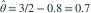

总体密度在 时为  ，在 时为 ，其中 。样本均值为 。用一阶原点矩方程得到的 的估计值是？
，在 时为 ，其中 。样本均值为 。用一阶原点矩方程得到的 的估计值是？
，在 时为 ，其中 。样本均值为 。用一阶原点矩方程得到的 的估计值是？- A0.7
- B0.8
- C0.2
- D0.3
我已思考，展开答案与解析
正确答案：A
- 。
- 令总体均值等于样本均值，得

。
易错提醒分段常数是密度高度，两段对应的条件均值分别为 1/2 和 3/2。
JYSG · 432精选 · 册内复旦大学432·2016年·八(1)；PDF第32页（印刷页30）
原大题拆解